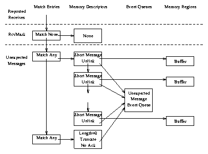

Printed December 1999
The Portals 3.0 Message Passing Interface
Revision 1.0
2
Ron Brightwell, Tramm Hudson, and Rolf Riesen
Computational Sciences, Computer Sciences, and Mathematics Center
Sandia National Laboratories
P.O. Box 5800
Albuquerque, NM 87185-1110
Arthur B. Maccabe
Department of Computer Science
The University of New Mexico
Albuquerque, NM 87131
Abstract
This report presents a specification for the Portals 3.0 message passing interface. Portals 3.0 is intended to allow scalable, high-performance network communication between nodes of a parallel computing system. Specifically, it is designed to support a parallel computing platform composed of clusters of commodity workstations connected by a commodity system area network fabric. In addition, Portals 3.0 is well suited to massively parallel processing and embedded systems. Portals 3.0 represents an adaption of the data movement layer developed for massively parallel processing platforms, such as the 4500-node Intel TeraFLOPS machine.
Several people have contributed to the philosophy, design, and implementation of the Portals message passing architecture as it has evolved. We acknowledge the following people for their contributions: Al Audette, Lee Ann Fisk, David Greenberg, Gabi Istrail, Chu Jong, Mike Levenhagen, Jim Otto, Mark Sears, Lance Shuler, Mack Stallcup, Jeff VanDyke, Dave van Dresser, Lee Ward, and Stephen Wheat.
This document describes an application programming interface for message passing between nodes in a system area network. The goal of this interface is to improve the scalability and performance of network communication by defining the functions and semantics of message passing required for scaling a parallel computing system to ten thousand nodes. This goal is achieved by providing an interface that will allow a quality implementation to take advantage of the inherently scalable design of Portals.
This document is divided into several sections:
Existing message passing technologies available for commodity cluster networking hardware do not meet the scalability goals required by the Cplant [1] project at Sandia National Laboratories. The goal of the Cplant project is to construct a commodity cluster that can scale to the order of ten thousand nodes. This number greatly exceeds the capacity for which existing message passing technologies have been designed and implemented.
In addition to the scalability requirements of the network, these technologies must also be able to support a scalable implementation of the Message Passing Interface (MPI) [7] standard, which has become the de facto standard for parallel scientific computing. While MPI does not impose any scalability limitations, existing message passing technologies do not provide the functionality needed to allow implementations of MPI to meet the scalability requirements of Cplant.
The following are properties of a network architecture that do not impose any inherent scalability limitations:
The following are properties of a network architecture that do not impose scalability limitations for an implementation of MPI:
Portals were originally designed for and implemented on the nCube machine as part of the SUNMOS (Sandia/UNM OS) [6] and Puma [11] lightweight kernel development projects. Portals went through two design phases, the latter of which is used on the 4500-node Intel TeraFLOPS machine [10]. Portals have been very successful in meeting the needs of such a large machine, not only as a layer for a high-performance MPI implementation [2], but also for implementing the scalable run-time environment and parallel I/O capabilities of the machine.
The second generation Portals implementation was designed to take full advantage of the hardware architecture of large MPP machines. However, efforts to implement this same design on commodity cluster technology identified several limitations, due to the differences in network hardware as well as to shortcomings in the design of Portals.
The primary goal in the design of Portals is scalability. Portals are designed specifically for an implementation capable of supporting a parallel job running on ten thousand nodes. Performance is critical only in terms of scalability. That is, the level of message passing performance is characterized by how far it allows an application to scale and not by how it performs in a two-node ping-pong benchmark.
Portals are designed to allow for scalability, not to guarantee it. Portals cannot overcome the shortcomings of a poorly designed application program. Applications that have inherent scalability limitations, either through design or implementation, will not be transformed by Portals into scalable applications. Scalability must be addressed at all levels. Portals do not inhibit scalability, but do not guarantee it either.
To support scalability, the Portals interface maintains a minimal amount of state. Portals provide reliable, ordered delivery of messages between pairs of processes. They are connectionless: a process is not required to explicitly establish a point-to-point connection with another process in order to communicate. Moreover, all buffers used in the transmission of messages are maintained in user space. The target process determines how to respond to incoming messages, and messages for which there are no buffers are discarded.
Portals combine the characteristics of both one-side and two-sided communication. They define a ``matching put'' operation and a ``matching get'' operation. The destination of a put (or send) is not an explicit address; instead, each message contains a set of match bits that allow the receiver to determine where incoming messages should be placed. This flexibility allows Portals to support both traditional one-sided operations and two-sided send/receive operations.
Portals allows the target to determine whether incoming messages are acceptable. A target process can choose to accept message operations from any specific process or can choose to ignore message operations from any specific process.
In traditional system architectures, network packets arrive at the network interface card (NIC), are passed through one or more protocol layers in the operating system, and eventually copied into the address space of the application. As network bandwidth began to approach memory copy rates, reduction of memory copies became a critical concern. This concern lead to the development of zero-copy message passing protocols in which message copies are eliminated or pipelined to avoid the loss of bandwidth.
A typical zero-copy protocol has the NIC generate an interrupt for the CPU when a message arrives from the network. The interrupt handler then controls the transfer of the incoming message into the address space of the appropriate application. The interrupt latency, the time from the initiation of an interrupt until the interrupt handler is running, is fairly significant. To avoid this cost, some modern NICs have processors that can be programmed to implement part of a message passing protocol. Given a properly designed protocol, it is possible to program the NIC to control the transfer of incoming messages, without needing to interrupt the CPU. Because this strategy does not need to involve the OS on every message transfer, it is frequently called ``OS Bypass.'' ST [12], VIA [3], FM [5], GM [9], and Portals are examples of OS Bypass protocols.
Many protocols that support OS Bypass still require that the application actively participate in the protocol to ensure progress. As an example, the long message protocol of PM requires that the application receive and reply to a request to put or get a long message. This complicates the runtime environment, requiring a thread to process incoming requests, and significantly increases the latency required to initiate a long message protocol. The Portals message passing protocol does not require activity on the part of the application to ensure progress. We use the term ``Application Bypass'' to refer to this aspect of the Portals protocol.
In this section, we give a conceptual overview of the Portals API. The goal is to provide a context for understanding the detailed description of the API presented in the next section.
A portal represents an opening in the address space of a process. Other processes can use a portal to read (get) or write (put) the memory associated with the portal. Every data movement operation involves two processes, the initiator and the target. The initiator is the process that initiates the data movement operation. The target is the process that responds to the operation by either accepting the data for a put operation, or replying with the data for a get operation.
In this discussion, activities attributed to a process may refer to activities that are actually performed by the process or on behalf of the process. The inclusiveness of our terminology is important in the context of application bypass. In particular, when we note that the target sends a reply in the case of a get operation, it is possible that reply will be generated by another component in the system, bypassing the application.
Figures 1 and 2 present graphical interpretations of the Portal data movement operations: put and get. In the case of a put operation, the initiator sends a put request message containing the data to the target. The target translates the portal addressing information in the request using its local portal structures. When the request has been processed, the target optionally sends an acknowledgement message.
|
In the case of a get operation, the initiator sends a get request to the target. As with the put operation, the target translates the portal addressing information in the request using its local portal structures. Once it has translated the portal addressing information, the target sends a reply that includes the requested data.
|
We should note that portal address translations are only performed on nodes that respond to operations initiated by other nodes. Acknowledgements and replies to get operations bypass the portals address translation structures.
One-sided data movement models (e.g., shmem [4], ST [12], MPI-2 [8]) typically use a triple to address memory on a remote node. This triple consists of a process id, memory buffer id, and offset. The process id identifies the target process, the memory buffer id specifies the region of memory to be used for the operation, and the offset specifies an offset within the memory buffer.
In addition to the standard address components (process id, memory buffer id, and offset), a portal address includes a set of match bits. This addressing model is appropriate for supporting one-sided operations as well as traditional two-sided message passing operations. Specifically, the Portals API provides the flexibility needed for an efficient implementation of MPI-1, which defines two-sided operations with one-sided semantics.
Figure 3 presents a graphical representation of the structures used by a target in the interpretation of a portal address. The process id is used to route the message to the appropriate node and is not reflected in this diagram. The memory buffer id, called the portal id, is used as an index into the portal table. Each element of the portals table identifies a match list. Each element of the match list specifies two bit patterns: a set of ``don't care'' bits, and a set of ``must match'' bits. In addition to the two sets of match bits, each match list element has a list of memory descriptors. Each memory descriptor identifies a memory region and an optional event queue. The memory region specifies the memory to be used in the operation and the event queue is used to record information about these operations.
|
Figure 4 illustrates the steps involved in translating a portal address, starting from the first element in a match list. If the match criteria specified in the match list entry are met and the first entry in the memory descriptor list accepts the operation1, the operation (put or get) is performed using the memory region specified in the memory descriptor. (Note, while the match list is searched for a matching entry, only the first element in the memory descriptor list is considered for the operation.) If the memory descriptor specifies that it is to be unlinked after a successful operation, it is unlinked from the list of memory descriptors. Next, if the memory descriptor is unlinked and this empties the memory descriptor list, the match entry will also be unlinked if its unlink flag has been set. Finally, if there is an event queue specified in the memory descriptor, the operation is logged in the event queue.
|
If the match criteria specified in the match list entry are not met or the memory descriptor associated with the match list entry rejects the operation, the address translation continues with the next match list entry. If the end of the match list has been reached, the address translation is aborted and the incoming requested is discarded.
A process can control access to its portals using an access control list. Each entry in the access control list specifies a process id and a portal table index. The access control list is actually an array of entries. Each incoming request includes an index into the access control list (i.e., a ``cookie'' or hint). If the id of the process issuing the request doesn't match the id specified in the access control list entry or the portal table index specified in the request doesn't match the portal table index specified in the access control list entry, the request is rejected.
Process identifiers and portal table indexes may include wildcard values to increase the flexibility of this mechanism. When the access control list is initialized, the entry with index zero enables access to all portals for all processes in the same application and the entry with index one enables access to all portals for all system processes. The remaining entries are set to disable all other access.
Two aspects of this design merit further discussion. First, the model assumes that the information in a message header, the sender's id in particular, is trustworthy. In most contexts, we assume that the entity that constructs the header is trustworthy; however, using cryptographic techniques, we could easily devise a protocol that would ensure the authenticity of the sender.
Second, because the access check is performed by the receiver, it is possible that a malicious process will generate thousands of messages that will be denied by the receiver. This could saturate the network and/or the receiver, resulting in a denial of service attack. Moving the check to the sender using capabilities, would remove the potential for this form of attack. However, the solution introduces the complexities of capability management (exchange of capabilities, revocation, protections, etc).
| xx | Name | Section |
| EQ | Event Queue | 3.8 |
| MD | Memory Descriptor | 3.7 |
| ME | Match Entry | 3.6 |
| NI | Network Interface | 3.5 |
Type names use lower case with underscores to separate words. Each type name starts with ptl_ and ends with _t. When used in the body of this report, type names appear in a fixed font, e.g., ptl_match_bits_t.
Names for constants use upper case with underscores to separate words. Each constant name starts with PTL_. When used in the body of this report, type names appear in a fixed font, e.g., PTL_OK.
The Portals API defines a variety of base types. These types represent a simple renaming of the base types provided by the C programming language. In most cases these new type names have been introduced to improve type safety and to avoid issues arising from differences in representation sizes (e.g., 16-bit or 32-bit integers).
Each type of object is given a unique handle type to enhance type checking. The type, ptl_handle_any_t, can be used when a generic handle is needed. Every handle value can be converted into a value of type ptl_handle_any_t without loss of information.
Handles are not simple values. Every portals object is associated with a specific network interface and an identifier for this interface (along with an object identifier) is part of the handle for the object.
The type ptl_sr_value_t defines the types of values held in status registers. This is a signed integer type. The size is implementation dependent, but must be at least 32 bits.
The Portals API includes a function, PtlInit, to initialize the library and a function, PtlFini, to cleanup after the application is done using the library.
int PtlInit( void );
The PtlInit function initializes the Portals library. This function should be called by all processes in an application before calling any of the functions defined by the Portal API. This function should be called once and only once during initialization by each process in a parallel job.
void PtlFini( void );
The PtlFini function cleans up after the Portals library is no longer needed by a process. After this function is called, calls to any of the functions defined by the Portal API or use of the structures set up by the Portals API will result in undefined behavior. This function should be called once and only once during termination by each process in a parallel job. Typically, this function will be called in the exit sequence of each process.
Processes that use the Portals API, can be identified using a node id and process id. Every node in the computing system has a unique node identifier and every process running on a node has a unique process identifier. As such, any process in the computing system can be identified by its node id and process id. Processes can also be identified using a group id and rank id. When a portals job is loaded, it is given a unique group identifier. In addition, each process in the job is assigned a unique rank id starting at zero.
The Portals API defines a type, ptl_process_id_t for representing process ids using either or both of the schemes, a function, PtlGetId, which can be used to obtain the id of the current process, and a function, PtlTransId, to translate addresses between the two schemes.
typedef enum { PTL_ADDR_NID, PTL_ADDR_GID, PTL_ADDR_BOTH } ptl_addr_kind_t;
typedef struct {
ptl_addr_kind_t addr_kind; /* kind of address pair */
ptl_id_t nid, pid; /* node id, process id */
ptl_id_t gid, rid; /* group id, rank id */
} ptl_process_id_t;
The ptl_process_id_t type uses a tag and up to four identifiers to represent a process id. Whenever a process id is filled in by the interface (e.g., by PtlGetId or when an event is recorded), the addr_kind member is set to PTL_ADDR_BOTH, and all four of the four remaining members will be set to the appropriate values. When a process id is passed to an operation in the Portals API (e.g., PtlGetId or PtlGet), the addr_kind member must be PTL_ADDR_NID or PTL_ADDR_GID and the nid and pid or gid and rid members must be filled in, respectively.
int PtlGetId( ptl_process_id_t* id, ptl_id_t* gsize );
| id | output | On successful return, this location will hold the id for the calling process. |
| gsize | output | On successful return, this location will hold the number of processes in the process group for this process. |
int PtlTransId( ptl_process_id_t* id );
| id | input | A pointer to the process address to be translated. This address should be expressed using nid, pid or gid, rid addressing, i.e., addr_kind should be PTL_ADDR_NID or PTL_ADDR_GID. |
| id | output | On successful return, this location will hold a process address with all four address members filled in, i.e., addr_kind will be PTL_ADDR_BOTH. |
Once initialized, each interface provides a portal table, an access control table, and a collection of status registers. See Section 3.6 for a discussion of updating portal table entries using the PtlMEAttach function. See Section 3.9 for a discussion of the initialization and updating of entries in the access control table. See Section 3.5.4 for a discussion of the PtlNIStatus function which can be used to determine the value of a status register.
Every other type of Portal object (e.g., memory descriptor, event queue, or match entry) is associated with a specific network interface. The association to a network interface is established when the object is created and is encoded in the handle for the object.
Each network interface is initialized and shutdown independently. The initialization routine, PtlNIInit, returns a handle for an interface object which is used in all subsequent portal operations. The PtlNIFini function is used to shutdown an interface and release any resources that are associated with the interface.
The Portals API also defines the PtlNIStatus function to query the status registers for a network interface, the PtlNIDist function to determine the ``distance'' to another process, and the PtlNIHandle function to determine the network interface that an object is associated with.
int PtlNIInit( ptl_interface_t interface,
ptl_pt_index_t ptl_size,
ptl_ac_index_t acl_size,
ptl_handle_ni_t* handle );
The PtlNIInit function is used to initialized the Portals API for a network interface. This function must be called before any other operations that apply to the interface. It is an error to initialize a network interface more than once in the same process.
| interface | input | Identifies the network interface to be initialized. (See section 3.2.5 for a discussion of values used to identify network interfaces.) |
| ptl_size | input | Specifies the number of entries in the portal table for this interface. |
| acl_size | input | Specifies the size of the access control list for this interface. (See section 3.9 for more information about access control lists.) |
| handle | output | On successful return, this location will hold a handle for the interface. |
int PtlNIFini( ptl_handle_ni_t interface );
The PtlNIFini function is used to release the resources allocated for a network interface. Once the PtlNIFini operation has been started, the results of pending API operations (e.g., operations initiated by another thread) for this interface are undefined. Similarly, the effects of incoming operations (puts and gets) or return values (acknowledgements and replies) for this interface are undefined.
| interface | input | A handle for the interface to shutdown. |
int PtlNIBarrier( ptl_handle_ni_t interface );
The PtlNIBarrier function blocks the calling process until all processes in the process group have invoked the PtlNIBarrier function for the specified interface.
| interface | input | A handle for the interface to use. |
int PtlNIStatus( ptl_handle_ni_t interface,
ptl_sr_index_t register,
ptl_sr_value_t* status );
The PtlNIStatus function returns the value of a status register for the specified interface. (See section 3.2.7 for more information on status register indexes and status register values.)
| interface | input | A handle for the interface to use. |
| register | input | An index for the status register to read. |
| status | output | On successful return, this location will hold the current value of the status register. |
int PtlNIDist( ptl_handle_ni_t interface,
ptl_process_id_t process,
double* distance );
The PtlNIDist function returns the distance to another process using the specified interface. Distances are only defined relative to an interface. Distance comparisons between different interfaces on the same node may be meaningless.
| interface | input | A handle for the interface to use. |
| process | input | An identifier for the process whose distance is being requested. |
| distance | output | On successful return, this location will hold the distance to the remote process. |
int PtlNIHandle( ptl_handle_any_t handle,
ptl_handle_ni_t* interface );
The PtlNIHandle function returns a handle for the network interface that the object identified by handle is associated with. If the object identified by handle is a network interface, this function returns the same value it is passed.
| handle | input | A handle for the object. |
| interface | output | On successful return, this location will hold a handle for the network interface associated with handle. |
A match list is a chain of match entries. Each match entry includes a list of memory descriptors and a set of match criteria. The match criteria can be used to reject incoming requests based on process id and/or the match bits provided in the request. A match list is created using the PtlMEAttach function which creates a match list consisting of a single match entry, attaches the match list to the specified portal index, and returns a handle for the match entry. Match entries can be dynamically inserted and removed from a match list using the PtlMEInsert and PtlMEUnlink functions.
typedef enum { PTL_RETAIN, PTL_UNLINK } ptl_unlink_t;
int PtlMEAttach( ptl_handle_ni_t interface,
ptl_pt_index_t index,
ptl_process_id_t matchid,
ptl_match_bits_t match_bits,
ptl_match_bits_t ignorebits,
ptl_unlink_t unlink,
ptl_handle_me_t* handle );
Values of the type ptl_unlink_t are used to control whether an item is unlinked from a list. The value PTL_UNLINK enables unlinking. The value PTL_RETAIN disables unlinking.
The PtlMEAttach function creates a match list consisting of a single entry and attaches this list to the portal table for interface. If the portal table already has a match list attached to the specified index, the existing list (including any attached memory descriptor lists) must first be unlinked.
| interface | input | A handle for the interface to use. |
| index | input | The portal table index where the match list should be attached. |
| matchid | input | Specifies the match criteria for the process id of the requestor. The constant PTL_ID_ANY can be used to wildcard any of the ids in the ptl_process_id_t structure. |
| match_bits, ignorebits | input | Specify the match criteria to apply to the match bits in the incoming request. The ignorebits are used to mask out insignificant bits in the incoming match bits. The resulting bits are then compared to the match entry's match bits to determine if the incoming request meets the match criteria. |
| unlink | input | Indicates the match list entry should be unlinked when the last memory descriptor associated with this match entry is unlinked. (Note, the check for unlinking a match entry only occurs when a memory descriptor is unlinked and this leaves the memory descriptor list empty.) |
| handle | output | On successful return, this location will hold a handle for the newly created match entry. |
typedef enum { PTL_INS_BEFORE, PTL_INS_AFTER } ptl_ins_pos_t;
int PtlMEInsert( ptl_handle_me_t current,
ptl_process_id_t matchid,
ptl_match_bits_t match_bits,
ptl_match_bits_t ignorebits,
ptl_unlink_t unlink,
ptl_ins_pos_t position,
ptl_handle_me_t* handle );
Values of the type ptl_ins_pos_t are used to control where a new item is inserted in a list. The value PTL_INS_BEFORE is used to insert the new item before the current item. The value PTL_INS_AFTER is used to insert the new item after the current item.
The PtlMEInsert function creates a new match entry and inserts this entry into the match list containing current.
| current | input | A handle for a match entry. The new match entry will be inserted immediately before or immediately after this match entry. |
| matchid, match_bits, ignorebits, unlink | input | See the discussion for PtlMEAttach. |
| position | input | Indicates whether the new match entry should be inserted before or after the current entry. |
| handle | input | See the discussion for PtlMEAttach. |
int PtlMEUnlink( ptl_handle_me_t entry );
The PtlMEUnlink function can be used to unlink a match entry from a match list. This operation also releases any resources associated with the match entry (including the list of associated memory descriptors). It is an error to use the match entry handle after calling PtlMEUnlink.
| entry | input | A handle for the match entry to be unlinked. |
A memory descriptor contains information about a region of an application process' memory and an event queue where information about the operations performed on the memory descriptor are recorded. The Portals API provides three operations to create memory descriptors: PtlMDAttach, PtlMEInsert, and PtlMEBind; an operation to update a memory descriptor, PtlMDUpdate; and an operation to unlink and release the resources associated with a memory descriptor, PtlMDUnlink.
typedef struct {
void* start;
ptl_size_t length;
int threshold;
unsigned int options;
void* user_ptr;
ptl_handle_eq_t eventq;
} ptl_md_t;
The ptl_md_t type defines the application view of a memory descriptor. Values of this type are used to initialize and update the memory descriptors.
- PTL_MD_OP_PUT
- Specifies that the memory descriptor will respond to put operations. By default, memory descriptors reject put operations.
- PTL_MD_OP_GET
- Specifies that the memory descriptor will respond to get operations. By default, memory descriptors reject get operations.
- PTL_MD_MANAGE_REMOTE
- Specifies that the offset used in accessing the memory region is provided by the incoming request. By default, the offset is maintained locally. When the offset is maintained locally, the offset is incremented by the length of the request so that the next operation will access the next part of the memory region.
- PTL_MD_TRUNCATE
- Specifies that the length provided in the incoming request can be reduced to match the memory available in the region. (The memory available in a memory region is determined by subtracting the offset from the length of the memory region.) By default, if the length in the incoming operation is greater than the amount of memory available, the operation is rejected.
- PTL_MD_ACK_DISABLE
- Specifies that an acknowledgement should not be sent for incoming put operations, even if requested. By default, acknowledgements are sent for put operations that request an acknowledgement. Acknowledgements are never sent for get operations. The value sent in the reply serves as an implicit acknowledgement.
Note: It is not considered an error to have a memory descriptor that does not respond to either put or get operations: Every memory descriptor responds to reply operations. Nor is it considered an error to have a memory descriptor that responds to both put and get operations.
int PtlMDAttach( ptl_handle_me_t match,
ptl_md_t mem_desc,
ptl_unlink_t unlink,
ptl_handle_md_t* handle );
The PtlMDAttach operation is used to create a memory descriptor list consisting of a single memory descriptor and attach this list to a match entry. If this match entry already has a list of memory descriptors, the existing memory descriptors must first be unlinked.
| match | input | A handle for the match entry that the memory descriptor will be associated with. |
| mem_desc | input | Provides initial values for the application visible parts of a memory descriptor. Other than its use for initialization, there is no linkage between this structure and the memory descriptor maintained by the API. |
| unlink | input | A flag to indicate whether the memory descriptor is unlinked when its threshold drops to zero. (Note, the check for unlinking a memory descriptor only occurs when the threshold transitions from one to zero when responding to an operation. If the threshold is set to zero during initialization or using PtlMDUpdate, the memory descriptor is not unlinked.) |
| handle | output | On successful return, this location will hold a handle for the newly created memory descriptor. The handle argument can be NULL, in which case the handle will not be returned3. |
int PtlMDInsert( ptl_handle_md_t current,
ptl_md_t mem_desc,
ptl_unlink_t unlink,
ptl_ins_pos_t position,
ptl_handle_md_t* handle );
The PtlMDInsert creates a new memory descriptor and links it into the list containing current.
| mem_desc, unlink | input | See the discussion for PtlMDAttach. |
| position | input | Indicates whether the new memory descriptor should be inserted before or after the current entry. |
| current | input | A handle for a memory descriptor. The new memory descriptor will be inserted immediately before or immediately after this memory descriptor. |
| handle | output | See the discussion for PtlMDAttach. |
int PtlMDBind( ptl_handle_ni_t interface,
ptl_md_t mem_desc,
ptl_handle_md_t* handle );
The PtlMDBind operation is used to create a ``free floating'' memory descriptor, i.e., a memory descriptor that is not part of the memory descriptor list for a match entry.
| interface | input | A handle for the network interface that the memory descriptor will be associated with. |
| mem_desc | input | Provides initial values for the application visible parts of a memory descriptor. Other than its use for initialization, there is no linkage between this structure and the memory descriptor maintained by the API. |
| handle | output | On successful return, this location will hold a handle for the newly created memory descriptor. The handle argument must be a valid address and cannot be NULL. |
int PtlMDUnlink( ptl_handle_md_t mem_desc );
The PtlMDUnlink function unlinks the memory descriptor from any memory descriptor list it may be linked to and releases the resources associated with a memory descriptor. (This function does not free the memory region associated with the memory descriptor.)
| mem_desc | input | A handle for the memory descriptor to be released. |
int PtlMDUpdate( ptl_handle_md_t mem_desc,
ptl_md_t* old,
ptl_md_t* new,
ptl_handle_eq_t testq );
The PtlMDUpdate function provides a conditional, atomic update operation for memory descriptors. If old is not NULL, the current value of the memory descriptor identified by mem_desc is recorded in the location identified by old. If new is not NULL the memory descriptor identified by handle will be updated to reflect the values in the structure pointed to by new if testq has the value PTL_EQ_NONE or if the event queue identified by testq is empty.
| mem_desc | input | A handle for the memory descriptor to update. |
| old | output | If old is not the value NULL, the current value of the memory descriptor will be stored in the location identified by old. |
| new | input | If new is not the value NULL, this argument provides the new values for the memory descriptor, if the update is performed. |
| testq | input | A handle for an event queue used to predicate the update. If testq is equal to PTL_EQ_NONE, the update is performed unconditionally. Otherwise, the update is performed if and only if testq is empty. If the update is not performed, the function returns the value PTL_NOUPDATE. (Note, the testq argument does not need to be the same as the event queue associated with the memory descriptor.) |
The conditional update can be used to ensure that the memory descriptor has not changed between the time it was examined and the time it is updated. In particular, it is needed to support an MPI implementation where the activity of searching an unexpected message queue and posting a receive must be atomic.
Event queues are used to log operations performed on memory descriptors. They can also be used to hold acknowledgements for completed put operations and to note when the data specified in a put operation has been sent (i.e., when it is safe to reuse the buffer that holds this data). Multiple memory descriptors can share a single event queue.
In addition to the ptl_handle_eq_t type, the Portals API defines two types associated with events: The ptl_event_kind_t type defines the kinds of events that can be stored in an event queue. The ptl_event_t type defines a structure that holds the information associated with an event.
The Portals API also provides five functions for dealing with event queues: The PtlEQAlloc function is used to allocate the API resources needed for an event queue, the PtlEQFree function is used to release these resources, the PtlEQCount function can be used to obtain the number of events in an event queue, the PtlEQGet function can be used to get the next event from an event queue, and the PtlEQWait function can be used to block a process (or thread) until an event queue has at least one event.
typedef enum {
PTL_EVENT_GET,
PTL_EVENT_PUT,
PTL_EVENT_REPLY,
PTL_EVENT_ACK,
PTL_EVENT_SENT
} ptl_event_kind_t;
The Portals API defines five types of events that can be logged in an event queue:
typedef struct {
ptl_event_kind_t type;
ptl_process_id_t initiator;
ptl_pt_index_t portal;
ptl_match_bits_t match_bits;
ptl_size_t rlength;
ptl_size_t mlength;
ptl_size_t offset;
ptl_md_t mem_desc;
ptl_hdr_data_t hdr_data;
} ptl_event_t;
An event structure includes the following members:
int PtlEQAlloc( ptl_handle_ni_t interface,
ptl_size_t count,
ptl_handle_eq_t* handle );
The PtlEQAlloc function is used to build an event queue.
| interface | input | A handle for the interface that the event queue will be associated with. |
| count | input | The number of events that can be stored in the event queue. |
| handle | output | On successful return, this location will hold a handle for the newly created event queue. |
int PtlEQFree( ptl_handle_eq_t eventq );
The PtlEQFree function releases the resources associated with an event queue. This function does not free the memory region associated with the event queue. It is up to the user to insure that no memory descriptors are associated with the event queue once it is freed.
| eventq | input | A handle for the event queue to be released. |
int PltEQCount( ptl_handle_eq_t eventq,
ptl_size_t* count );
The PTLEQCount function can be used to discover the number events in an event queue.
| eventq | input | A handle for the event queue. |
| count | output | On successful return, this location will hold the number of events in the event queue. |
int PltEQGet( ptl_handle_eq_t eventq,
ptl_event_t* event );
The PTLEQGet function is a nonblocking function that can be used to get the next event in an event queue. The event is removed from the queue.
| eventq | input | A handle for the event queue. |
| event | output | On successful return, this location will hold the values associated with the next event in the event queue. |
int PltEQWait( ptl_handle_eq_t eventq,
ptl_event_t* event );
The PTLEQWait function can be used to block the calling process (thread) until there is an event in an event queue. This function also returns the next event in the event queue and removes this event from the queue. This is the only blocking operation in the Portals 3.0 API.
| eventq | input | A handle for the event queue to wait on. The calling process (thread) will be blocked until eventq is not empty. |
| event | output | On successful return, this location will hold the values associated with the next event in the event queue. |
Processes can use the access control table to control which processes are allowed to perform operations on portal table entries. Each communication interface has a portal table and an access control table. The access control table for the default interface contains an entry at index zero that allows all members of the same group to communicate. Entries in the access control table can be manipulated using the PtlACEntry function.
int PtlACEntry( ptl_handle_ni_t interface,
ptl_ac_index_t index,
ptl_processid_t matchid,
ptl_pt_index_t portal );
The PtlACEntry function can be used to update an entry in the access control table for an interface.
| interface | input | Identifies the interface to use. |
| index | input | The index of the entry in the access control table to update. |
| matchid | input | Identifies the process(es) that are allowed to perform operations. The value PTL_ID_ANY can be used to wildcard either or both components of the process identifier. |
| portal | input | Identifies the portal index(es) that can be used. The value PTL_PT_INDEX_ANY can be used to wildcard the portal index. |
The Portals API provides two data movement operations: PtlPut and PtlGet.
typedef enum { PTL_ACK_REQ, PTL_NOACK_REQ } ptl_ack_req_t;
int PtlPut( ptl_handle_md_t mem_desc,
ptl_ack_req_t ack_req,
ptl_process_id_t target,
ptl_pt_index_t portal,
ptl_ac_index_t cookie,
ptl_match_bits_t match_bits,
ptl_size_t offset,
ptl_hdr_data_t hdr_data );
Values of the type ptl_ack_req_t are used to control whether an acknowledgement should be sent when the operation completes (i.e., when the data has been written to a memory descriptor of the target process). The value PTL_ACK_REQ requests an acknowledgement, the value PTL_NOACK_REQ requests that no acknowledgement should be generated.
The PtlPut function initiates an asynchronous put operation. There are two significant events associated with a put operation: completion of the send by the local node (PTL_EVENT_SENT) and the receipt of an acknowledgement (PTL_EVENT_ACK) indicating that the operation was accepted by the target. These events will be logged in the event queue associated with the memory descriptor (mem_desc) used in the put operation. Using a memory descriptor that does not have an associated event queue results in these events being discarded. In this case, the application must have another mechanism (e.g., a higher level protocol) for determining when it is safe to modify the memory region associated with the memory descriptor.
| mem_desc | input | A handle for the memory descriptor that describes the memory to be sent. If the memory descriptor has an event queue associated with it, it will be used to record an event when the message has been sent (PTL_EVENT_SENT). |
| ack_req | input | Controls whether an acknowledgement event is requested. Acknowledgements are only sent when they are requested by the initiating process and the memory descriptor has an event queue and the target memory descriptor enables them. |
| target | input | A process id for the target process. |
| portal | input | The index in the remote portal table. |
| cookie | input | The index into the access control table of the target process. |
| match_bits | input | The match bits to use for message selection at the target process. |
| offset | input | The offset into the target memory descriptor (only used when the target memory descriptor has the PTL_MD_MANAGE_REMOTE option set). |
| hdr_data | input | 64 bits of user data that can be included in message header. This data is written to an event queue entry at the target if an event queue is present on the matching memory descriptor. |
int PtlGet( ptl_handle_md_t mem_desc,
ptl_process_id_t target,
ptl_pt_index_t portal,
ptl_ac_index_t cookie,
ptl_match_bits_t match_bits,
ptl_size_t offset );
The PtlGet function initiates a remote read operation.
| mem_desc | input | A handle for the memory descriptor that describes the memory into which the requested data will be received. The memory descriptor can have an event queue associated with it to record events, such as when the message has been received (PTL_EVENT_REPLY). |
| target | input | A process id for the target process. |
| portal | input | The index in the remote portal table. |
| cookie | input | The index into the access control table of the target process. |
| match_bits | input | The match bits to use for message selection at the target process. |
| offset | input | The offset into the target memory descriptor (ignored unless the target memory descriptor has the PTL_MD_MANAGE_REMOTE option set). |
Table 2 presents a summary of the types defined by the Portals API. The first column in this table gives the type name, the second column gives a brief description of the type, the third column identifies the section where the type is defined, and the fourth column lists the functions that have arguments of this type.
| Name | Meaning | Section | Functions |
| ptl_ac_index_t | indexes for an access control table | 3.2.3 | PtlACEntry, PtlPut, PtlGet |
| ptl_ack_req_t | acknowledgement request types | 3.10.1 | PtlPut |
| ptl_addr_kind_t | kinds of process addresses (nid, pid or gid, rid) | 3.4.1 | |
| ptl_event_kind_t | kinds of events (get, put, reply, etc.) | 3.8.1 | PtlGetId |
| ptl_event_t | information about events | 3.8.2 | PtlEQGet |
| ptl_handle_any_t | handles for any object | 3.2.2 | PtlNIHandle |
| ptl_handle_eq_t | handles for event queues | 3.2.2 | PtlEQAlloc, PtlEQFree, PtlEQCount, PtlEQGet, PtlEQWait, PtlMDUpdate |
| ptl_handle_md_t | handles for memory descriptors | 3.2.2 | PtlMDAlloc, PtlMDUnlink, PtlMDUpdate, PtlMEAttach, PtlMEInsert, PtlPut, PtlGet |
| ptl_handle_me_t | handles for match entries | 3.2.2 | PtlMEAttach, PtlMEInsert, PtlMEUnlink |
| ptl_handle_ni_t | handles for network interfaces | 3.2.2 | PtlNIInit, PtlNIFini, PtlNIStatus, PtlNIDist, PtlEQAlloc, PtlACEntry, PtlPut, PtlGet |
| ptl_id_t | identifiers (nid, pid, gid, rid) | 3.2.6 | |
| ptl_ins_pos_t | insertion position (before or after) | 3.6.2 | PtlMeInsert, PtlMDInsert |
| ptl_interface_t | identifiers for network interfaces | 3.2.5 | PtlNIInit |
| ptl_match_bits_t | match (and ignore) bits | 3.2.4 | PtlMEAttach, PtlMEInsert, PtlPut, PtlGet |
| ptl_md_t | memory descriptors | 3.7.1 | PtlMDAttach, PtlMDInsert, PtlMDUpdate |
| ptl_process_id_t | process identifiers | 3.4.1 | PtlGetId, PtlNIDist, PtlMEAttach, PtlACEntry, PtlPut, PtlGet |
| ptl_pt_index_t | indexes for portal tables | 3.2.3 | PtlMEAttach, PtlACEntry |
| ptl_size_t | sizes | 3.2.1 | PtlEQAlloc, PtlEQCount, PtlPut, PtlGet |
| ptl_sr_index_t | indexes for status registers | 3.2.7 | PtlNIStatus |
| ptl_sr_value_t | values in status registers | 3.2.7 | PtlNIStatus |
| ptl_unlink_t | unlink options | 3.6.1 | PtlMEAttach, PtlMEInsert, PtlMDAttach, PtlMDInsert |
Table 3 presents a summary of the functions defined by the Portals API. The first column in this table gives the name for the function, the second column gives a brief description of the operation implemented by the function, and the third column identifies the section where the function is defined.
| Name | Operation | Section |
| PtlACEntry | update an entry in an access control table | 3.9 |
| PtlEQAlloc | create an event queue | 3.8 |
| PtlEQCount | get the number events in an event queue | 3.8 |
| PtlEQGet | get the next event from an event queue | 3.8 |
| PtlEQFree | release the resources for an event queue | 3.8 |
| PtlEQWait | wait for a new event in an event queue | 3.8 |
| PtlFini | shutdown the Portals API | 3.3 |
| PtlGet | perform a get operation | 3.10 |
| PtlGetId | get the id for the current process | 3.4 |
| PtlInit | initialize the Portals API | 3.3 |
| PtlMDAttach | create a memory descriptor and attach it to a match entry | 3.7 |
| PtlMDBind | create a free-floating memory descriptor | 3.7.4 |
| PtlMDInsert | create a memory descriptor and insert it in a list | 3.7 |
| PtlMDUnlink | remove a memory descriptor from a list and release its resources | 3.7 |
| PtlMDUpdate | update a memory descriptor | 3.7 |
| PtlMEAttach | create a match entry and attach it to a portal table | 3.6 |
| PtlMEInsert | create a match entry and insert it in a list | 3.6 |
| PtlMEUnlink | remove a match entry from a list and release its resources | 3.6 |
| PtlNIBarrier | barrier synchronization for a process group | 3.5 |
| PtlNIDist | get the distance to another process | 3.5 |
| PtlNIFini | shutdown a network interface | 3.5 |
| PtlNIHandle | get the network interface handle for an object | 3.5 |
| PtlNIInit | initialize a network interface | 3.5 |
| PtlNIStatus | read a network interface status register | 3.5 |
| PtlPut | perform a put operation | 3.10 |
| PtlTransId | translate id | 3.4 |
Table 4 summarizes the return codes used by functions defined by the Portals API. All of these constants are integer values. The first column of this table gives the symbolic name for the constant, the second column gives a brief description of the value, and the third column identifies the functions that can return this value.
| Name | Meaning | Functions |
| PTL_AC_INV_INDEX | invalid access control table index | PtlACEntry |
| PTL_ADDR_UNKNOWN | unknown process address | PtlTransId |
| PTL_EQ_DROPPED | at least one event has been dropped | PtlEQGet, PtlWait |
| PTL_EQ_EMPTY | no events available in an event queue | PltEQGet |
| PTL_FAIL | error during initialization or cleanup | PtlInit, PtlFini |
| PTL_ILL_MD | illegal memory descriptor values | PtlMDAttach, PtlMDInsert, PtlMDBind, PtlMDUpdate |
| PTL_INIT_DUP | duplicate initialization of an interface | PtlNIInit |
| PTL_INIT_INV | initialization of an invalid interface | PtlNIInit |
| PTL_INV_ASIZE | invalid access control table size | PtlNIInit |
| PTL_INV_EQ | invalid event queue handle | PtlMDUpdate, PtlEQFree, PtlEQCount, PtlEQGet |
| PTL_INV_HANDLE | invalid handle | PtlNIHandle |
| PTL_INV_MD | invalid memory descriptor handle | PtlMDInsert, PtlMDUnlink, PtlMDUpdate |
| PTL_INV_ME | invalid match entry handle | PtlMDAttach, PtlMDInsert |
| PTL_INV_NI | invalid network interface handle | PtlNIBarrier, PtlNIDist, PtlNIFini, PtlMDBind, PtlEQAlloc |
| PTL_INV_PROC | invalid process identifier | PtlNIDist, PtlMEAttach, PtlMEInsert, PtlACEntry, PtlPut, PtlGet |
| PTL_INV_PSIZE | invalid portal table size | PtlNIInit |
| PTL_INV_PTINDEX | invalid portal table index | PtlMEAttach |
| PTL_INV_REG | invalid status register | PtlNIStatus |
| PTL_INV_SR_INDX | invalid status register index | PtlNIStatus |
| PTL_ML_TOOLONG | match list too long | PtlMEInsert |
| PTL_NOINIT | uninitialized API | all, except PtlInit |
| PTL_NOSPACE | insufficient memory | PtlNIInit, PtlMDAttach, PtlMDInsert, PtlMDBind, PtlEQAlloc, PtlMEAttach, PtlMEInsert |
| PTL_NOUPDATE | no update was performed | PtlMDUpdate |
| PTL_OK | success | all |
| PTL_SEGV | addressing violation | PtlGetId, PtlTransId, PtlNIInit, PtlNIStatus, PtlNIDist, PtlNIHandle, PtlMEAttach, PtlMEInsert, PtlMDAttach, PtlMDInsert, PtlMDBind, PtlMDUpdate, PtlEQAlloc, PtlEQCount, PtlEQGet, PtlEQWait |
Table 5 summarizes the remaining constant values introduced by the Portals API. The first column in this table presents the symbolic name for the constant, the second column gives a brief description of the value, the third column identifies the type for the value, and the fourth column identifies the sections in which the value is mentioned.
| Name | Meaning | Base type | Section |
| PTL_ACK_REQ | request an acknowledgement | ptl_ack_req_t | 3.10.1 |
| PTL_ADDR_BOTH | nid, pid and gid, rid process address | ptl_addr_kind_t | 3.4.1 |
| PTL_ADDR_GID | gid, rid process address | ptl_addr_kind_t | 3.4.1 |
| PTL_ADDR_NID | nid, pid process address | ptl_addr_kind_t | 3.4.1 |
| PTL_EQ_NONE | a NULL event queue handle | ptl_handle_eq_t | 3.7.6 |
| PTL_EVENT_GET | get event | ptl_event_kind_t | 3.8.1 |
| PTL_EVENT_PUT | put event | ptl_event_kind_t | 3.8.1 |
| PTL_EVENT_REPLY | reply event | ptl_event_kind_t | 3.8.1 |
| PTL_EVENT_ACK | acknowledgement event | ptl_event_kind_t | 3.8.1 |
| PTL_EVENT_SENT | sent event | ptl_event_kind_t | 3.8.1 |
| PTL_ID_ANY | wildcard for process id fields | ptl_id_t | 3.6.1 |
| PTL_IFACE_DEFAULT | default interface | ptl_interface_t | 3.2.5 |
| PTL_INS_AFTER | insert after | ptl_ins_pos_t | 3.6.2 |
| PTL_INS_BEFORE | insert before | ptl_ins_pos_t | 3.6.2 |
| PTL_MD_ACK_DISABLE | a flag to disable acknowledgements | int | 3.7.1 |
| PTL_MD_MANAGE_REMOTE | a flag to enable the use of remote offsets | int | 3.7.1 |
| PTL_MD_OP_GET | a flag to enable get operations | int | 3.7.1 |
| PTL_MD_OP_PUT | a flag to enable put operations | int | 3.7.1 |
| PTL_MD_THRESH_INF | infinite threshold for a memory descriptor | int | 3.7.1 |
| PTL_MD_TRUNCATE | a flag to enable truncation of a request | int | 3.7.1 |
| PTL_NOACK_REQ | request no acknowledgement | ptl_ack_req_t | 3.10.1 |
| PTL_PT_INDEX_ANY | wildcard for portal indexes | ptl_pt_index_t | 3.9.1 |
| PTL_RETAIN | disable unlinking | ptl_unlink_t | 3.6.1 |
| PTL_SR_DROP_COUNT | index for the dropped count register | ptl_sr_index_t | 3.2.7 |
| PTL_UNLINK | enable unlinking | ptl_unlink_t | 3.6.1 |
The portals API uses four types of messages: put requests, acknowledgements, get requests, and replies. In this section, we describe the information passed on the wire for each type of message. We also describe how this information is used to process incoming messages.
Table 6 summarizes the information that is transmitted for a put request. The first column provides a descriptive name for the information, the second column provides the type for this information, the third column identifies the source of the information, and the fourth column provides additional notes. Most information that is transmitted is obtained directly from the PtlPut operation. Notice that the handle for the memory descriptor used in the PtlPut operation is transmitted even though this value cannot be interpreted by the target. A value of anything other than PTL_MD_NONE, is interpreted as a request for an acknowledgement.
| Information | Type | PtlPut argument | Notes |
| operation | int | indicates a put request | |
| initiator | ptl_process_id_t | local information | |
| target | ptl_process_id_t | target | |
| portal index | ptl_pt_index_t | portal | |
| cookie | ptl_ac_index_t | cookie | |
| match bits | ptl_match_bits_t | match_bits | |
| offset | ptl_size_t | offset | |
| memory desc | ptl_handle_md_t | mem_desc | no ack if PTL_MD_NONE |
| length | ptl_size_t | mem_desc | length member |
| data | bytes | mem_desc | start and length members |
Table 7 summarizes the information transmitted in an acknowledgement. Most of the information is simply echoed from the put request. Notice that the initiator and target are obtained directly from the put request, but are swapped in generating the acknowledgement. The only new piece of information in the acknowledgement is the manipulated length which is determined as the put request is satisfied.
| Information | Type | Put Information | Notes |
| operation | int | indicates an acknowledgement | |
| initiator | ptl_process_id_t | target | |
| target | ptl_process_id_t | initiator | |
| portal index | ptl_pt_index_t | portal index | echo |
| match bits | ptl_match_bits_t | match bits | echo |
| offset | ptl_size_t | offset | echo |
| memory desc | ptl_handle_md_t | memory desc | echo |
| requested length | ptl_size_t | length | echo |
| manipulated length | ptl_size_t | obtained from the operation |
Table 8 summarizes the information that is transmitted for a get request. Like the information transmitted in a put request, most of the information transmitted in a get request is obtained directly from the PtlGet operation. Unlike put requests, get requests do not include the event queue handle. In this case, the reply is generated whenever the operation succeeds and the memory descriptor must not be unlinked until the reply is received. As such, there is no advantage to explicitly sending the event queue handle.
| Information | Type | PtlGet argument | Notes |
| operation | int | indicates a get operation | |
| initiator | ptl_process_id_t | local information | |
| target | ptl_process_id_t | target | |
| portal index | ptl_pt_index_t | portal | |
| cookie | ptl_ac_index_t | cookie | |
| match bits | ptl_match_bits_t | match_bits | |
| offset | ptl_size_t | offset | |
| memory desc | ptl_handle_md_t | mem_desc | |
| length | ptl_size_t | mem_desc | length member |
Table 9 summarizes the information transmitted in a reply. Like an acknowledgement, most of the information is simply echoed from the get request. The initiator and target are obtained directly from the get request, but are swapped in generating the acknowledgement. The only new information in the acknowledgement are the manipulated length and the data which are determined as the get request is satisfied.
| Information | Type | Put Information | Notes |
| operation | int | indicates an acknowledgement | |
| initiator | ptl_process_id_t | target | |
| target | ptl_process_id_t | initiator | |
| portal index | ptl_pt_index_t | portal index | echo |
| match bits | ptl_match_bits_t | match bits | echo |
| offset | ptl_size_t | offset | echo |
| memory desc | ptl_handle_md_t | memory desc | echo |
| requested length | ptl_size_t | length | echo |
| manipulated length | ptl_size_t | obtained from the operation | |
| data | bytes | obtained from the operation |
When an incoming message arrives on a network interface, the runtime system first checks that the target process identified in the request is a valid process that has initialized the network interface (i.e., that the target process has a valid portal table). If this test fails, the runtime system discards the message and increments the dropped message count for the interface. The remainder of the processing depends on the type of the incoming message. Put and get messages are subject to access control checks and translation (searching a match list), while acknowledgement and reply messages bypass the access control checks and the translation step.
Acknowledgement messages include a handle for the event queue where the event should be recorded. Upon receipt of an acknowledgement, the runtime system only needs to confirm that the event queue still exists and that there is space for another event. Should the event queue no longer exist or if there is not sufficient space in the event queue, the message is simply discarded and the dropped message count for the interface is incremented. Otherwise, the runtime system builds an acknowledgement event from the information in the acknowledgement message and adds it to the event queue.
Reception of reply messages is also relatively straightforward. Each reply message includes a handle for a memory descriptor. If this descriptor exists, it is used to receive the message. A reply message will be dropped if the memory descriptor identified in the request doesn't exist or if the event queue in the memory descriptor has no space and is not PTL_EQ_NONE. In either of these cases, the dropped message count for the interface is incremented. These are the only reasons for dropping reply messages. Every memory descriptor accepts and truncates incoming reply messages, eliminating the other potential reasons for rejecting a reply message.
The critical step in processing an incoming put or get request involves mapping the request to a memory descriptor. This step starts by using the portal index in the incoming request to identify a list of match entries. This list of match entries is searched in order until a match entry is found whose match criteria matches the match bits in the incoming request and whose first memory descriptor accepts the request.
Because acknowledge and reply messages are generated in response to requests made by the process receiving these messages, the checks performed by the runtime system for acknowledgements and replies are minimal. In contrast, put and get messages are generated by remote processes and the checks performed for these messages are more extensive. Incoming put or get messages may be rejected because:
A memory descriptor may reject an incoming request for any of the following reasons:
In this section we present several example to illustrate expected usage patterns for the Portals 3.0 API. The first example describes how to implement parallel servers using the features of the Portals 3.0 API. This example covers the access control list and the use of remote managed offsets. The second example presents an approach to dealing with dropped requests. This example covers aspects of match lists and memory descriptors. The final example covers message reception in MPI. This example illustrates more sophisticated uses of matching and a procedure to update a memory descriptor.
Figure 5 illustrates the logical structure of a parallel file server. In this case, the parallel server consists of four servers that stripe application data across four disks. We would like to present applications with the illusion that the file server is a single entity. We will assume that all of the processes that constitute the parallel server are in a single group and that this group is unique to the parallel server.
|
When an application establishes a connection to the parallel file server, it will allocate a portal and access control list entry for communicating with the server. The access control list entry will include the portal and match any process in the parallel file server's group, so all of the file server processes will have access to the portal. The portal information and access control entry will be sent to the file server at this time. If the application and server need to have multiple, concurrent I/O operations, they can use additional portals or match entries to keep the operations from interfering with one another.
When an application initiates an I/O operation, it first builds a memory descriptor that describes the memory region involved in the operation. This memory descriptor will enable the appropriate operation (put for read operations and get for write operations) and enable the use of remote offsets (this lets the servers decide where their data should be placed in the memory region). After creating the memory descriptor and linking it into the appropriate portal entry, the application sends a read or write request (using PtlPut) to one of the file server processes. The file server processes can then use put or get operations with the appropriate offsets to fill or retrieve the contents of the application's buffer. To know when the operation has completed, the application can add an event queue to the memory descriptor and add up the lengths of the remote operations until the sum is the size of the requested I/O operation.
If a process does not anticipate unexpected requests, they will be discarded. Applications using the Portals API can query the dropped count for the interface to determine the number of requests that have been dropped (see Section 3.5.4). While this approach minimizes resource consumption, it does not provide information that might be critical in debugging the implementation of a higher level protocol.
To keep track of more information about dropped requests, we use a memory descriptor that truncates each incoming request to zero bytes and logs the ``dropped'' operations in an event queue. Note that the operations are not dropped in the Portals sense, because the operation succeeds.
The following code fragment illustrates an implementation of this approach. In this case, we assume that a thread is launched to execute the function watch_drop. This code starts by building an event queue to log truncated operations and a memory descriptor to truncate the incoming requests. This example only captures ``dropped'' requests for a single portal. In a more realistic situation, the memory descriptor would be appended to the match list for every portal. We also assume that the thread is capable of keeping up with the ``dropped'' requests. If this is not the case, we could use a finite threshold on the memory descriptor to capture the first few dropped requests.
#include <stdio.h> #include <stdlib.h> #include <portals.h>#define DROP_SIZE 32 /* number of dropped requests to track */
int watch_drop( ptl_handle_ni_t ni, ptl_pt_index_t index ) ptl_handle_eq_t drop_events; ptl_event_t event; ptl_handle_md_t drop_em; ptl_md_t drop_desc; ptl_process_id_t any_proc; ptl_handle_me_t match_any;
/* create the event queue */ if( PtlEQAlloc(ni, DROP_SIZE,
drop_events) != PTL_OK ) fprintf( stderr, "Couldn't create the event queue" ); exit( 1 ); /* build a match entry */ any_proc.pid_nid = PTL_ADDR_GID; any_proc.gid = PTL_ID_ANY; any_proc.rid = PTL_ID_ANY; PtlMEAttach( index, any_proc, 0, (ptl_match_bits_t)0, PTL_RETAIN,
match_any ); /* create the memory descriptor */ drop_desc.start = NULL; drop_desc.length = 0; drop_desc.threshold = PTL_MD_THRESH_INF; drop_desc.options = PTL_MD_OP_PUT | PTL_MD_OP_GET | PTL_MD_TRUNCATE; drop_desc.user_ptr = NULL; drop_desc.eventq = drop_events; if( PtlMDAttach(match_any, drop_desc,
drop_em) != PTL_OK ) fprintf( stderr, "Couldn't create the memory descriptor" ); exit( 1 ); /* watch for "dropped" requests */ while( 1 ) if( PtlEQWait( drop_events,
event ) != PTL_OK ) break; fprintf( stderr, "Dropped request from gid = event.initiator.gid, event.initiator.rid );
5.3 Message Transmission in MPI
We conclude this section with a fairly extensive example that describes an approach to implementing message transmission for MPI. Like many MPI implementations, we distinguish two message transmission protocols: a short message protocol and a long message protocol. We use the constant MPI_LONG_LENGTH to determine the size of a long message.
For small messages, the sender simply sends the message and presumes that the message will be received (i.e., the receiver has allocated a memory region to receive the message body). For large messages, the sender also sends the message, but does not presume that the message body will be saved. Instead, the sender builds a memory descriptor for the message and enables get operations on this descriptor. If the target does not save the body of the message, it will record an event for the put operation. When the process later issues a matching MPI receive, it will perform a get operation to retrieve the body of the message.
The following code presents a function that implements the send side of the protocol. The global variable EndGet is the last match entry attached to the portal index used for posting long messages. This entry does not match any incoming requests (i.e., the memory descriptor rejects all get operations) and is built during initialization of the MPI library. The other global variable,MPI_NI, is a handle for the network interface used by the MPI implementation.
extern ptl_handle_me_t EndGet; extern ptl_handle_ni_t MPI_NI;void MPIsend( void *buf, ptl_size_t len, void *data, ptl_handle_eq_t eventq, ptl_process_id target, ptl_match_bits_t match ) ptl_handle_md_t send_handle; ptl_md_t mem_desc; ptl_ack_req_t want_ack = PTL_NOACK_REQ;
mem_desc.start = buf; mem_desc.length = len; mem_desc.threshold = 1; mem_desc.options = PTL_MD_GET_OP; mem_desc.user_ptr = data; mem_desc.eventq = eventq;
if( len >= MPI_LONG_LENGTH ) ptl_handle_me_t me_handle;
/* add a match entry to the end of the get list */ PtlMEInsert( target, match, 0, PTL_UNLINK, PTL_INS_BEFORE, EndGet,
me_handle ); PtlMDAttach( me_handle, mem_desc, PTL_UNLINK, NULL ); /* we want an ack for long messages */ want_ack = PTL_ACK_REQ;
/* create a memory descriptor and send it */ PtlMDBind( MPI_NI, mem_desc,
send_handle ); PtlPut( send_handle, want_ack, target, MPI_SEND_PINDEX, MPI_AINDEX, match, 0 ); The MPISend function returns as soon as the message has been scheduled for transmission. The event queue argument, eventq, can be used to determine the disposition of the message. Assuming that eventq is not PTL_EQ_NONE, a PTL_EVENT_SENT event will be recorded for each message as the message is transmitted. For small messages, this is the only event that will be recorded in eventq. In contrast, long messages include an explicit request for an acknowledgement. If the target process has posted a matching receive, the acknowledgement will be sent as the message is received. If a matching receive has not been posted, the message will be discarded and no acknowledgement will be sent. When the target process later issues a matching receive, the receive will be translated into a get operation and a PTL_EVENT_GET event will be recorded in eventq.
Figure 6 illustrates the organization of a match list for receiving MPI messages. The match list starts with entries that match the preposted MPI receives (these entries are not shown in Figure 6); followed by a match entry that rejects all incoming requests, called the RcvMark; followed by two match entries that match all incoming requests. The last two match entries are used for unexpected messages, i.e., messages that do not match any of the receives that have been posted by the local MPI process. The first of these handles short messages by saving the body of the message, while the second handles long messages by discarding the message body. All of the memory descriptors associated with these match entries share a common event queue to ensure that unexpected messages are processed in arrival order.
 Figure 0.6: Message Reception in MPI When the local MPI process posts an MPI receive, a new match entry is inserted before the RcvMark entry and, as such, after all of the previously posted receives. This ensures that preposted receives are matched in the order that they were posted (a requirement of MPI). Inserting an entry for a preposted receive is not a matter of simply inserting a match entry before the RcvMark. You must first check to see if a matching message has arrived before adding the new entry to match list. The trick is to avoid the race condition that results from the possibility that a matching message arrives after you have searched the match list, but before you have inserted the preposted receive. The function presented in
The following code presents a function that avoids this race condition. The code starts by creating a memory descriptor and a match entry which is inserted before the RcvMark. Because the memory descriptor's threshold is initially set to zero, the memory descriptor will not respond to any incoming operations. After inserting the new match entry, the code searches for a matching message that has already been received. If a match is found, the memory descriptor and match entry are released and the function returns. Otherwise, the code conditionally updates the threshold member of the memory descriptor. The update is predicated by the condition that no unexpected messages have arrived since the start of the search.
extern ptl_handle_eq_t UnexpQueue; extern ptl_handle_me_t RcvMark; extern ptl_handle_me_t ShortMatch;typedef struct event_list_tag ptl_event_t event; struct event_list_tag *next; event_list;
extern event_list Rcvd;
void AppendRcvd( ptl_event_t event ) /* append an event onto the Rcvd list */
int SearchRcvd( void *buf, ptl_size_t len, ptl_process_id_t sender, ptl_match_bits_t match, ptl_match_bits_t ignore, ptl_event_t *event ) /* Search the Rcvd event queue, looking for a message that matches the requested message. * If one is found, remove the event from the Rcvd list and return it. */
typedef enum RECEIVED, POSTED receive_state;
receive_state CopyMsg( void *buf, ptl_size_t length, ptl_event_t event, ptl_md_t md_buf ) ptl_md_t md_buf; ptl_handle_me_t me_handle;
if( event.rlength >= MPI_LONG_LENGTH ) PtlMDBind( MPI_NI, md_buf,
md_handle ); PtlGet( event.initiator, MPI_GET_PINDEX, 0, event.match_bits, MPI_AINDEX, md_handle ); return POSTED; else /* copy the message and recycle the buffer */ memcpy( buf, event.md_desc.start, len ); event.md_desc.threshold = 1; PtlMDAttach( ShortMatch, event.md_desc, PTL_UNLINK, NULL ); return RECEIVED; receive_state MPIreceive( void *buf, ptl_size_t len, void *MPI_data, ptl_handle_eq_t eventq, ptl_process_id_t sender, ptl_match_bits_t match, ptl_match_bits_t ignore ) ptl_md_t md_buf; ptl_handle_md_t md_handle; ptl_handle_me_t me_handle; ptl_event_t event;
/* build a memory descriptor for the receive */ md_buf.start = buf; md_buf.length = len; md_buf.threshold = 0; /* temporarily disabled */ md_buf.options = PTL_MD_PUT_OP; md_buf.user_ptr = MPI_data; md_buf.eventq = eventq;
/* see if we have already received the message */ if( SearchRcvd(buf, len, sender, match, ignore,
event) ) return CopyMsg( buf, length, event, md_buf ); /* create the match entry and attach the memory descriptor */ PtlMEInsert(sender, match, ignore, PTL_UNLINK, PTL_INS_BEFORE, RcvMark,
me_handle); PtlMDAttach( me_handle, md_buf, PTL_UNLINK, md_handle ); md_buf.threshold = 1; do if( PtlEQGet( UnexpQueue,
event ) != PTL_EQ_EMPTY ) if( MPIMatch(event, match, ignore, sender) ) PtlMDUnlink( md_handle ); /* don't leave the receive posted */ return CopyMsg( buf, len, event, md_buf ); else AppendRcvd( event ); while( PtlMDUpdate(md_handle, NULL, md_buf, unexp_queue) == PTL_NOUPDATE ); return POSTED;
References
Bibliography
- [1]
- R. Brightwell, D. S. Greenberg, A. B. Maccabe, and R. Riesen. Massively Parallel Computing with Commodity Components. Parallel Computing, To appear, 2000.
- [2]
- R. Brightwell and L. Shuler. Design and implementation of MPI on Puma portals. In Proceedings of the Second MPI Developer's Conference, pages 18-25, July 1996.
- [3]
- Compaq, Microsoft, and Intel. Virtual Interface Architecture Specification Version 1.0. Technical report, Compaq, Microsoft, and Intel, December 1997.
- [4]
- Cray Research, Inc. SHMEM Technical Note for C, SG-2516 2.3, October 1994.
- [5]
- M. Lauria, S. Pakin, and A. Chien. Efficient Layering for High Speed Communication: Fast Messages 2.x. In Proceedings of the IEEE International Symposium on High Performance Distributed Computing, 1998.
- [6]
- A. B. Maccabe, K. S. McCurley, R. Riesen, and S. R. Wheat. SUNMOS for the Intel Paragon: A brief user's guide. In Proceedings of the Intel Supercomputer Users' Group. 1994 Annual North America Users' Conference., pages 245-251, June 1994.
- [7]
- Message Passing Interface Forum. MPI: A Message-Passing Interface standard. The International Journal of Supercomputer Applications and High Performance Computing, 8, 1994.
- [8]
- Message Passing Interface Forum. MPI-2: Extensions to the Message-Passing Interface, July 1997. http://www.mpi-forum.org/docs/mpi-20-html/mpi2-report.html.
- [9]
- Myricom, Inc. The GM Message Passing System. Technical report, Myricom, Inc., 1997.
- [10]
- Sandia National Laboratories. ASCI Red, 1996. http://www.sandia.gov/ASCI/TFLOP.
- [11]
- L. Shuler, C. Jong, R. Riesen, D. van Dresser, A. B. Maccabe, L. A. Fisk, and T. M. Stallcup. The Puma operating system for massively parallel computers. In Proceeding of the 1995 Intel Supercomputer User's Group Conference. Intel Supercomputer User's Group, 1995.
- [12]
- Task Group of Technical Committee T11. Information Technology - Scheduled Transfer Protocol - Working Draft 2.0. Technical report, Accredited Standards Committee NCITS, July 1998.
Footnotes:
2This work was supported by the United States Department of Energy under Contract DE-AC04-94AL85000.
1Memory descriptors can reject operations because the threshold has been exceeded or due to insufficient space in the memory region, see Section 3.7
2Tying the memory descriptor to a user-defined value can be useful when multiple memory descriptor share the same event queue or when the memory descriptor needs to be associated with a data structure maintained by the application. For example, an MPI implementation can set the user_ptr argument to the value of an MPI Request. This direct association allows for processing of memory descriptor's by the MPI implementation without a table lookup or a search for the appropriate MPI Request.
3In many cases, the handle will be obtained when an event is processed
File translated from TEX by TTH, version 2.86.
On 25 Jan 2001, 16:41.